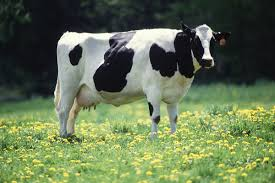

2. Processing the Beef
Once cattle reach maturity, they are transported to processing facilities. Here, meat is inspected, butchered, and packaged under strict safety regulations.

Understanding the journey of beef
Cattle are raised on farms or ranches, often grazing on grasslands. Farmers ensure proper nutrition, health care, and humane treatment throughout the animal's life.
Once cattle reach maturity, they are transported to processing facilities. Here, meat is inspected, butchered, and packaged under strict safety regulations.
Packaged beef is shipped to grocery stores, restaurants, and markets. Cold-chain logistics ensure freshness and quality during transport.

Beef is a versatile protein used in countless dishes—from steaks and burgers to stews and stir-fries. It’s rich in iron, zinc, and B vitamins.

Modern beef production faces challenges like greenhouse gas emissions and land use. Ethical farming and plant-based alternatives are gaining traction.